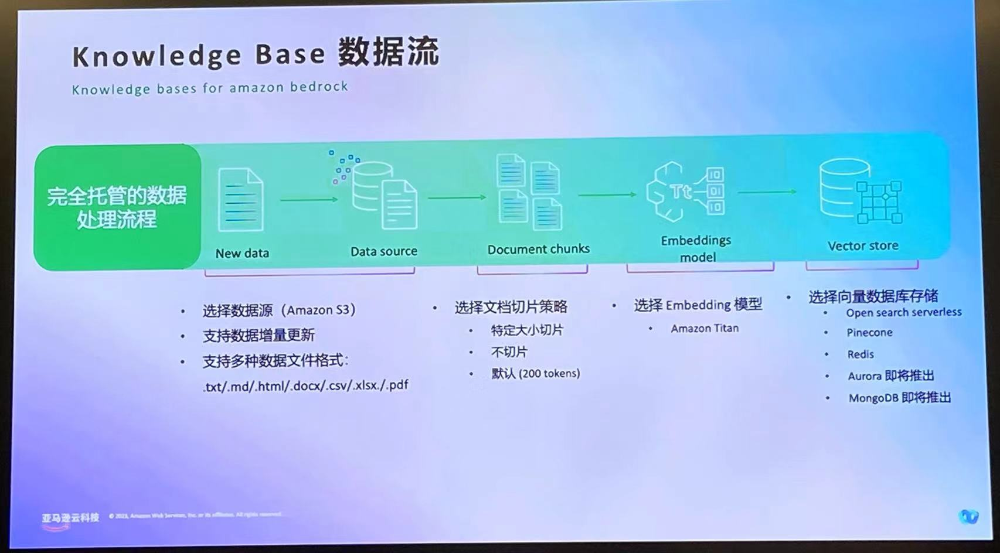

Date:2024/4/8
Amazon Bedrock
工作流： 
{kind=link}
Agent:
{kind=link}
{kind=link}
Claude 3
- 支持200k token 超长上下文
- 针对某些特殊场景，会开放支持1M token 的上下文窗口
- 大海捞针（Needle in A haystack,NIAH）召回率表现优异
Claude3三种规格中的各个优势：
Opus --最强大
sonnet --最均衡
Haiku --最轻快
Bedrock概要介绍
AWS Bedrock是一种基于人工智能的应用程序开发框架,旨在利用基础模型快速构建和扩展智能应用程序。它提供了对主流基础模型的统一API访问,并允许企业使用自身数据对模型进行微调,满足特定业务需求。Bedrock确保了数据隐私、安全性和合规性,支持构建智能代理执行复杂任务,并通过检索增强生成等技术增强模型能力。同时,它提供了经济高效的解决方案,无需管理基础设施。总的来说,AWS Bedrock为企业带来了AI驱动的应用开发新范式,加速了智能应用的构建和部署。 AWS Bedrock为企业提供了多种主流基础模型的选择,包括AI21 Labs的Jurassic-2、Anthropic的Claude系列、Cohere的Command和Embed、Mistral AI的Mistral等。这些模型涵盖了自然语言处理、计算机视觉、多模态等多个领域,可用于构建各种智能应用。除了第三方模型,Bedrock还集成了Meta的LLaMA模型、Stability AI的Stable Diffusion等知名开源模型。同时,亚马逊自身的模型如Amazon Titan也在内置选择之列,为企业客户提供更多可靠、优质的模型资源。通过提供丰富的基础模型选择。 AWS Bedrock提供了一种无服务器的方式,通过统一API将各种基础模型集成。开发者只需通过该API发出请求,Bedrock便会基于请求内容选择合适的模型、完成模型推理并返回结果。在这个过程中,Bedrock会自动处理底层基础架构、模型部署、运行管理等复杂细节,开发者无需关注这些内部细节。同时,Bedrock支持个性化微调,允许企业使用自有数据对模型进行优化,满足特定业务需求。通过这种方式,Bedrock显著降低了AI应用开发的复杂性,使企业能够高效利用各种基础模型的能力,快速构建和交付智能应用。
Bedrock/Claude3 核心优势
Claude 3系列模型 在多项AI系统常用评估测试集中，包括本科级别专 家知识(MMLU)、研究生级别专家推 理(GPQA)、基础数学(GSM8K, MATH)，多语种数学(MGSM)，阅读 理解(RACE-H)，常识推理 (HellaSwag)，代码领域均取得领先业界的性能。其中Opus模型展现了接近人类水 平的理解和流畅度，在复杂任务上的表现领先同类模型。
在价格、速度、效果三个方面，Claude 3系列在这三个维度上的表现,无论是追求极高智能水平的Opus版本,还是注重成本效益的Haiku版本,都能在速度、智能和成本之间达到理想的平衡,满足不同客户的差异化需求。在多模态能力上，相比GPT-3.5T在多模态能力上的缺失，,Claude 3各版本支持多模态功能,能够同时处理文本、图像等不同类型数据,拥有更广阔的应用场景。另一方面，从成本数据来看,Claude 3的每万Token输入和输出成本在同类产品中处于相对低廉的水平,尤其是Haiku版本,输入成本仅0.25美元/万Token,输出成本4-15美元/万Token,性价比极高。因此，Claude 3模型家族的定位是在智能水平、推理速度和成本之间寻求最佳平衡,并提供多模态支持和优秀的性价比,使其能够满足不同客户的差异化需求。
Claude 3 Haiku版本的输入成本仅为每万Token 0.25美元,输出成本为1.25美元/万Token,相比同级别的gpt-3.5-turbo-0125模型的输入成本0.5美元/万Token和输出成本1.5美元/万Token,价格上具有近一倍的优势。即便是中高端的Claude 3 Sonnet版本,其输入成本为每万Token 3美元,而GPT-4 Turbo的输入成本为10美元/万Token,Claude 3 Sonnet的输入成本仅为GPT-4 Turbo的30%左右,价格优势明显。在输出成本方面,Claude 3 Sonnet为15美元/万Token,而GPT-4 Turbo为30美元/万Token,Claude 3 Sonnet的输出成本是GPT-4 Turbo的一半左右。
Claude 3系列模型具备与其他领先模型相媲美的高级视觉识别能力，支持处理各种格式(JPEG, PNG, GIF, WebPage）多种类型类型（照片，图表，技术绘图等）的图片。修复了“过度拒绝”问题，面对可能触及到系统安全边界的问题时，Claude 3系列模型提升了理解程度，能够辨别真正的风险，提升了创造性的人物表现。最后，提升了准确性，在处理挑战性开放问题时，Claude 3准确性相比Claude2.1准确性明显提升，并且减少了错误答案。Claude 3系列模型，全部都支持200K token的上下文窗口，此外针对某些特殊场景，会开放支持1M token的上下文 窗口。大海捞针 （Needle In A Haystack, NIAH)召回率表现优异，甚至还能识别出测试本身的局限，比如发现某“目标”句子明显是后来人为添加进原始文本的。
Bedrock 销售场景建议
Bedrock与Claude 3提供了广泛的应用场景,涵盖了从视觉理解、图像处理、文本生成到对话交互等多个领域。其核心功能包括:视觉认知能力,如图像理解、目标检测、图像分割、图片翻译等,能够高效处理各种视觉内容。文本生成能力,可生成多种类型的文本,如摘要、故事、营销文案等,同时支持根据上下文生成相关内容。对话交互能力,能与用户进行自然语言对话,回答问题、提供建议,并支持个性化定制。此外,Bedrock还提供了RAG(Retrieval Augmented Generation)功能,将知识检索与生成相结合,输出更加准确、信息丰富的内容。代码辅助、数据处理、代理操作等能力,也为开发者提供了全方位的支持。以下是一些使用Bedrock的应用场景举例： 1. 使用Bedrock构建RAG应用 1. 提升办公体验，智能写作助手 Amazon Bedrock 构建的知识增强生成系统(RAG)为用户提供智能写作辅助,通过融合检索和问答、语法检查等功能,提升用户文档创作体验。该系统能够根据用户输入的关键词或主题,从知识库中检索相关内容,并将其智能整合到文档中,辅助用户撰写。同时,系统还具备语法纠错、上下文关联等增强功能,确保输出内容的连贯性和准确性。无论是生成长文本、摘要,还是回答问题,RAG系统都可以给出高质量的响应,大幅提高写作效率,为用户带来智能化、个性化的写作体验。 2. 基于 AI 与文档对话，重构阅读方式 – 智能 AI 阅读助手 APP 亚马逊Bedrock构建的知识增强生成系统(RAG)融合了AI与文档处理,为用户提供智能AI阅读助手APP的功能。该系统能够智能阅读文献内容,批量文献总结,提高阅读效率。同时,它还支持针对文献实时交互对话,轻松获得智能解读,高效理解复杂内容。通过将知识检索与内容生成相结合,RAG系统为用户带来全新的文献阅读和理解体验,大幅提升学习研究效率,是基于AI与文档对话的重要创新应用。 3. 快速完成产品升级，提供企业级生成 AI 知识应用产品 利用Amazon Bedrock的构建框架,企业可以快速定制和构建出适合自身需求的AI应用场景,例如基于知识库的问答系统、智能文档摘要和理解等。Amazon Bedrock在数据安全层面给予充分保障,保证了企业的数据和模型在其私有云环境中安全部署和运行,并与Amazon的知识服务和模型(如VPC)相集成,确保数据的私密性和安全性。另外,它还支持与Amazon OpenSearch Service无缝集成,实现对大规模文档的高效检索和理解,为企业内部提供优质的知识管理和共享平台。 2. 使用Bedrock构建角色扮演应用 1. AI角色聊天，AI伴侣/AI聊天机器人 可以定制个性化角色,从而提供更具吸引力和沉浸感的交互体验。该服务提供24/7全天候运营,用户可以随时与AI伙伴进行自然对话和互动。AI伙伴不仅具备游戏和娱乐功能,还能分析用户偏好,为用户推荐个性化的内容,如电影、书籍和电视节目等。通过Amazon Bedrock,开发者能够轻松构建引人入胜的AI伙伴应用,满足用户对于智能虚拟伙伴的需求。 2. 为用户提供情绪陪护 通过Bedrock构建的角色扮演应用，,用户可以与AI助理进行自然地对话互动,涵盖高度定制化的设置、地点识别、语音识别等多种场景。这种AI对话系统累计服务了超过一万种用例,总共支持了7000万次人机对话。无论是应用于线上线下的产品销售,还是企业客户服务场景,Amazon Bedrock都能为AI助理赋能,提供高效、人性化的虚拟助理体验,是构建智能助手服务的强大底层技术支撑。 3. 使用Bedrock构建文本分析类应用 Amazon Bedrock能够对用户在游戏中的即时文字聊天进行分析,识别出存在于聊天内容中的色情、广告、骚扰等不当内容,并对这些不合规内容进行审查和过滤。同时,它也能识别多种语言和语境,确保在不同场景下都能准确理解用户交流的本质含义。 该服务利用自然语言处理和深度学习等技术,对聊天语料进行情感分析、主题识别等处理,为用户提供贴心周到的语料筛选和分析洞见。这种强大的文本分析能力,能够为游戏开发者营造安全、健康的在线游戏环境,提升用户体验,是Amazon Bedrock在游戏行业的重要应用场景之一。 4. 使用Bedrock构建文本生成类应用 Amazon Bedrock利用人工智能技术优化了亚马逊商品的文案内容,为顾客提供更精准、易懂的产品评论和描述信息。它通过分析15亿条用户评论和评级数据,自动生成具有高质量和准确度的评论摘要,为顾客呈现简洁有力的产品评价,提升了用户的购物体验。 该解决方案将人工智能与电商业务深度融合,通过智能生成文本的方式,不仅减轻了人工编写产品描述的工作负担,更能确保产品信息与客户真实需求高度匹配,帮助客户做出更明智的购买决策。 5. 构建智能电商搜索推荐应用 通过利用Bedrock提供模型的自然语言处理和机器学习能力,可以为用户提供个性化的商品推荐和智能搜索服务。该系统结合了用户历史数据、购物偏好和搜索记录等信息,利用Bedrock的模型,对用户需求进行分析和理解。系统会自动生成个性化商品推荐列表,并提供智能问答和搜索优化,帮助用户快速精准地找到想要的商品。
Claude3优势场景 从用户场景来看: 翻译场景：例如视频字幕翻译、英文文档、说明书翻译（英翻中），通过pe设置好，几乎可以做到一字不差的翻译 事实问答：历史事件汇总 内容生成：小说续写、角色生成与扮演 RAG场景：长文本+function calling 代码辅助：代码生成、数据处理、代码优化和解读、生成单元测试等 图像识别：给图片打标签、绘本打标签、动漫打标签+审核、生成商品详情/标签、商品图片理解，商品详情翻译润色、视频连续帧理解、给视频打标签 图像理解：图片/视频连续帧理解问答、常识性数值理解、多图信息提取+总结、运维图表理解、架构图理解、课堂板书等一些手写的非结构化理解 OCR识别：图片信息提取,用于下游任务,比如广告信息提取,不同格式订单信息整理 图像问答：如普通事件座谈、医疗问答等 企业内部：电商游戏等客户数评论/舆情分析、UGC内容审核、多途径翻译;图表估值提取/详细描述/概述;流程图识别/PDF文档识别/文档内图片识别 智能客服：电商、To C场景应用、重直行业资讯类服务/对话机器人/智能设备 营销：提高营运效率(锁货电商渠道平台商品推送、广告文案、社交媒体素材生成、邮件/评论自动回复) function calling：sonnet的能力结合价格，开辟 gpt 3.5和gpt 4之间的新赛道，是我们最好的武器,客户在使用 gpt 3.5 和 gpt 4 做function calling的过程中，如果遇到gpt 3.5效果不一定好，gpt 4又太贵的问题，可以引入sonnet。 从行业来看: 电商：智能客服、服装打标、广告文案、社交媒体素材生成、邮件/评论回复、售后服务知识库 游戏：内容审核(文字+图片)、role play角色型应用、NPC对话、游戏行为分析(Text2SQL) 广告&媒体：广告创意、学霸翻译、实时广告调生成、智能广告分析师... 物联网：智能家居、产品信息知识库/智能客服 教育：AI老师、LLM解题 跨行业：代码助手、运维助手、通用翻译(准确性和本地化效果好)、合同审查、法律案件问量化检索 制造业：订单照片OCR识别,知识库
Bedrock & Claude 3 合作伙伴解决方案建议
1、AI能力接入 基于服务或API接入,帮助客户快速开通和使用Bedrock。目标客户包括希望简单使用AI功能的客户，或需要高单独使用FM功能的客户。技术要求和实施周期较低。 2、AI能力平台 基于能力接入,提供更多接入渠道,提供预定义提示词及定制PE服务。目标客户是有大量和复杂需求的客户，需要工作需要知识中心/能力支持的客户。技术要求和实施周期适中。 3、RAG增强 基于Bedrock KB或Agent能力,为客户快速构建智能知识库,增强客户现有业务能力。目标客户是有大量和复杂需求，需要工作需要知识中心/能力支持的客户。技术要求和实施周期较高。 4、咨询及服务 基于自身和借助AWS技术能力,提供AI实施、AI运维等增强服务。目标客户是有自建"智能大脑"需求，或需要通过远程高级技术支持的客户。技术要求和实施周期最高。
Bedrock 账号开通流程
对于申请Claude模型使用的用户，首先,用户需要在Bedrock平台的特定region内手动启用对应模型的访问权限。这一过程需要进入Model Access→Management→Model Management界面,并提交使用详情后保存设置。其次,对于Claude模型,用户第一次启用时需要先通过"submit use case details"提交模型使用详情,待审核通过后方可访问该模型。同时该过程可能需要一定时间,期间无法立即获得模型访问权限。最后,待模型访问权限设置完成后,符合条件的用户即可在模型列表中查看并使用所需的Claude模型。对于使用其他模型的用户，如AI21 Labs、Cohere、Meta、Mistral AI、Stability AI以及titan系列的模型,进入Model Access→Management界面，选中所需要的模型后，保存即可。
根据Anthropic服务条款的约定,中国大陆及香港均不在其服务范围内,因此GCR客户需要满足如下合规要求。首先,开通账号作为公司主体,使用模型的业务场景以及服务的最终用户均为中国大陆及香港之外。同时,开通账号以及其关联的Payer账号(若有)的下游支付信息也需要设置为中国大陆及香港之外。
具体包括主账号及Payer账号的账单地址、国家/地区代码、联系人地址及联系信息等,均需要设置在中国大陆及香港地区之外。最后,Anthropic会定期抽查Bedrock Claude账号的合规性,若GCR账号不符合上述要求则会存在被要求停服的风险。Bedrock后台会在模型订阅过程中检测当前账号的税务信息，若税务内容如” business legal address”或” country code”等存在中国大陆或香港信息，则无法审核通过。需要联系对应bd，或者pdm，协助客户检查账号的Tax Setting信息，填报满足条件的信息后提交订阅申请。
以下列举了开通Bedrock模型权限常见的问题 1、"this offer is not available to accept in this country",主要是由于客户所在国家/地区与Bedrock后台税务设置信息不符,包括业务法律地址、国家代码等,导致无法在中国大陆或香港地区开通相关服务或进行某些操作。 2、"operation not allowed"客户为新账户且被后台标记为fraud，需要联系aws support解决。 首先,对于"this offer is not available to accept in this country"和"operation not allowed"等报错,主要是由于客户所在国家/地区与Bedrock后台税务设置信息不符,包括业务法律地址、国家代码等,导致无法在中国大陆或香港地区开通相关服务或进行某些操作。 3、对于"no identity based policy allows the aws-marketplace:ViewSubscriptions action"的报错,是由于客户的IAM权限设置问题,需要赋予Marketplace相关权限。 其次,对于"no identity based policy allows the aws-marketplace:ViewSubscriptions action"的报错,是由于客户的IAM权限设置问题,需要赋予Marketplace相关权限。 4、"AccessDeniedException: You don't have access to the model with the specified model"则表示客户账号缺乏访问指定模型的授权许可。 5、如果客户无法在tax setting页面修改相关设置,可能是由于其账号已关联了Payer Account,并将Payer Account设为了主账号,从而无法直接修改tax setting信息。这种情况下需要先在Payer Account的tax setting页面进行修改,然后再同步回客户的本账号,并控制台页面进行修改。 最后,如果客户无法在tax setting页面修改相关设置,可能是由于其账号已关联了Payer Account,并将Payer Account设为了主账号,从而无法直接修改tax setting信息。这种情况下需要先在Payer Account的tax setting页面进行修改,然后再同步回客户的本账号,并控制台页面进行修改。 总的来说,上述报错主要涉及账号注册地、税务设置、权限配置等方面的问题,客户需要根据具体报错提示并结合账号实际情况进行相应的检查和调整。
Bedrock 账单计费注意事项
Bedrock提供了三种计费方式,以满足不同场景的需求 1. On-demand方式适用于短期内偶尔使用的情况,根据输入的提示词(Prompt)和输出的token数量计费,灵活性高,但对于高并发或长期使用成本较高。 2. Provisioned Throughput方式则采用预先购买模型单元(Model Unit)的形式,相对于On-demand有更高的容量保证,支持1个月或6个月的使用承诺期,适合中长期、较为稳定的使用场景,按小时计费,可实现成本优化。 3. Fine tuning方式面向需要在基础模型上进行个性化调优的客户,按模型大小、训练token数量、模型存储以及模型推理三方面计费。其中模型微调token数量 = 模型微调数据集 token 总数 * 模型微调次数(Epoch)。 如何购买 Provisioned throughput 后台按照峰值 TPM 预留吞吐量，确保在流量高峰期间一致的客 户体验；客户需要 按小时计费，承诺期限为 1 个月或 6 个月，延长承诺期限会享受折扣。Bedrock 会自动配置购买的模型单元，并生成用于 PT 推理的唯 一 ARN ，客户只需要根据新的 ARN 来调用 API 接口，就可以实现资源独占；在同一个账户下，客户可以按需灵活地使用 OD 模式以及多个 PT 模式进行推理。
销售话术参考
Bedrock可以切入的痛点 - Bedrock同时提供AI21 Labs、Cohere、Claude、Meta、Mistral AI、Stability AI，以及亚马逊自己等多个公司不同的多个版本的模型，方便您去做不同模型的测试对比。 - Bedrock Claude 输入token支持到100k，Claude3输入token支持到200K( OpenAI上的 GPT-4最高支持 32K，OpenAI上的 GPT-3.5最高支持16K）。 - 意味着Claude模型可以一次性分析大约75000个单词，几乎是目前商业可用模型中“记性”最好的 - 代表能够记住更多近期对话的内容 - Claude3支持多模态，可以很好的识别文章中的图片、表格、架构图、流程图、手写体等非结构化数据，而gpt3.5不支持多模态。 - Bedrock提供更高的SLA( 99.9% SLA vs. OpenAI no SLA)。 - Bedrock可用来应对ChatGPT封号以及OpenAI API 不可用的时候，亚马逊提供多个接口可以提供自身服务的高可用。 - Claude3 sonnet定位是介于GPT3.5和4之间的新选择，Sonnet在部分场景效果优于GPT4，成本却更低；就算测试结果打平的场景，也有价格优势可以考虑。 - Bedrock提供的专业功包括Knowledge Base, Agent, model evaluation等除了基础模型之外的能力，方便客户快速构建端到端的生成式AI应用。 - 合规角度，用户的数据在传输和保存时都是加密的，数据不会用于模型训练，也不会共享给 第三方的模型厂商，Bedrock 上 除了amazon 自己的titan模型，其余都是 第三方 模型，用户调用第三方模型的 ip，请求，aws 不会共享给第三方公司。 - 大模型通常只是应用系统里的一个子模块，需要配合计算，数据库，数据分析等服务，Bedrock 可以和这些服务组合，形成端到端的应用。 沟通步骤 - 确定客户背景 1. 客户基本背景信息收集，针对Claude潜在用户，收集客户是否有海外主体（需要非HK） 2. 是否有使用GenAI的需求 3. 对GenAI的需求是对外提供还是对内部使用，分别的使用人数或者量级 4. 了解客户相关业务场景 5. 对GenAI的需求是文字生成还是图像生成 6. 客户的技术团队构成 7. 客户的角色：buyer 还是builder或者Model consumer / Model tuner 8. 客户对模型评价标准：速度、性能还是回答的准确性 - 确定客户现状 是否使用过大模型、是否接触过genai相关产品、是否听说过或者使用过Claude2/3、是否在使用其他平台的GenAI相关产品、目前使用大模型的方式（api调用还是说在第三方model provider平台上使用）、使用频率以及月度成本、是否有与代理商签约，目前有什么痛点（可从OpenAI封号、SLA、成本、输入token影响、模型拒答等方面切入）。 - 对Bedrock的想法 是否考虑使用Bedrock、有什么感兴趣的模型、是基于作为gpt的backup还是什么其他的考量。 - 假如客户已有GENAI使用模型场景，为什么要选择aws的Claude3？（或者说为什么客户要选择Claude而不是gpt或者Gemini） 1. 对于GPT或Gemini客户，Claude3有三种版本可供用户选择，用户可根据场景需求和预算选择最适合的模型 * Claude 3 Haiku 比 GPT 3.5T 更快、更便宜、更智能，且支持多模态—对于目前使用GPT3.5客户来说，这绝对是一个更好的选择。（示例场景：chatbot；快速低成本的翻译；内容审核；提取文本和图像中的数据等等） * Claude 3 Sonnet 比 GPT-4T 便宜，智能程度相当，速度不相上下，在某些使用情况下还会更快。它的价值更高，准确度和可靠性也更高。Sonnet 在基准测试中的得分高于 Gemini 1.0 Pro。（示例场景：分析企业知识，获取数据洞察；预测金融和市场模型；个性化客户分析营销；提高日常生产力等等） * Claude 3 Opus 比 GPT-4T 或 Gemini Ultra 更智能，在许多用于评估这些型号性能的基准测试中都处于领先地位。使用 GPT-4T 在人工智能前沿创造新体验的客户应迁移到 Claude 3 Opus。（示例场景：复杂任务自动化；文献解析综述；解决复杂问题等等） * Bedrock可以用来应对ChatGPT封号以及OpenAI API 不可用的时候，多个接口可以提供自身服务的高可用。 2. 对于老版的Claude用户，都应该选择升级到Claude3 * 如果用户正在使用Claude 2.0 或 Claude 2.1 —— Claude 3 Sonnet 比 Claude 2.1 更快、更智能、更便宜 * 如果用户正在使用Claude Instant 1.2 —— Claude 3 Haiku 比 Claude Instant 1.2 更快、更智能、更便宜，我们建议在 Claude 3 Haiku 发布时升级 * Claude3修复了“过度拒绝”的问题，现在的Claude3在面对系统安全边界上的问题时，能够更精确地辨别风险，降低拒绝回答的可能 3. 相比直接使用Anthropic官网 * Claude支持按region部署，客户的数据不会分享给Anthropic，也不会用于模型训练，在数据合规性上更有保障. * 如果您需要构建生成式AI，作为端到端应用，使用Bedrock调用Claude能十分方便的与现有云服务集成 4. Token优势 Claude3全系支持200k token上下文，特殊场景可支持1M token 5. 多模态优势 Claude3的多模态能力能够处理多种格式（JPEG、PNG、GIF、Webp）和多种类型（照片，图表，技术绘图、架构图、运维图、非结构化数据如板书、手写体等）的图片，并且能够从图片中获得理解，帮助拓展用户的使用场景. 6. Claude 3在Bedrock与GCP上的对比 GCP中请求链更长,由于目前还是Private Preview阶段，很容易被拒绝 模型迁移到Claude3会涉及哪些工作量 - 从Claude instance/2迁移到Claude 3的方式 1. 修改代码调用中的model ID. 2. Claude3 API call从Text Completions API 转为 Messages API，升级需要修改一下对话格式，有工具进行转换. 3. Claude3 更智能，可以适当更改部分prompt，减少token消耗. - 从Other 模型迁移到 Claude3 1. 端到端应用中，涉及到服务器，数据库等，但是无论使用何种模型，都不影响这部分资源，无需迁移。但是出于网络延迟等性能考量，将服务器和数据存储，计算等应用都部署在AWS，网络延迟能低一些，且服务之间的集成更方便. 2. 部分PE调整，Claude3更新以后PE对用户更加友好，调整量也变小. 3. 代码API调整，Claude3同样使用Messages API，API调用调整更小. - 认真倾听客户关键词，例如： 文本生成/图像生成/识别/超分/Bedrock/role play / character / 情感陪伴 / gpt / chatgpt / 文生文 /图生图/ Claude / 聊天 / 对话 / chatbot / 多模态 / GenAI / OpenAI/数字人/智能作曲/等，这些词是不错的表明GenAI商机的存在.